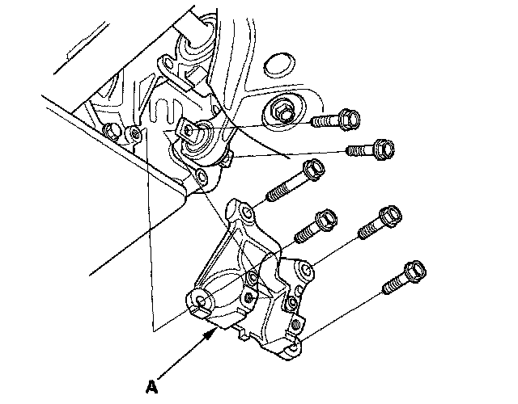
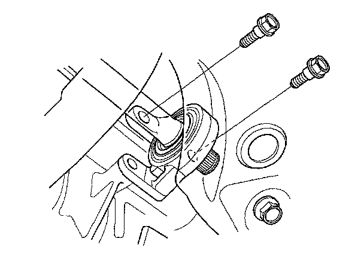
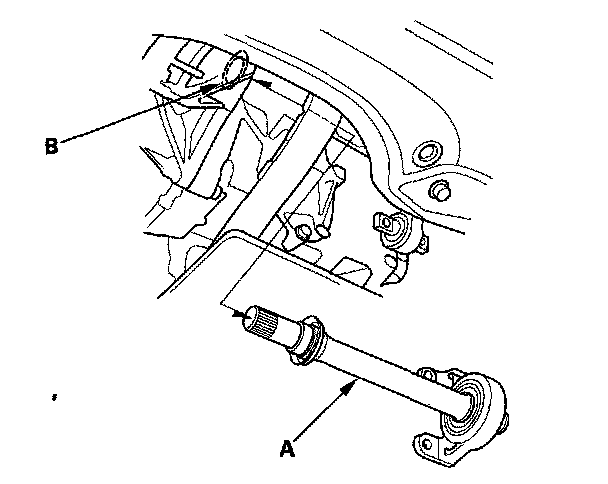
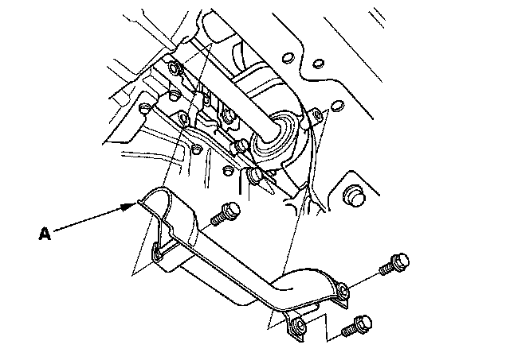
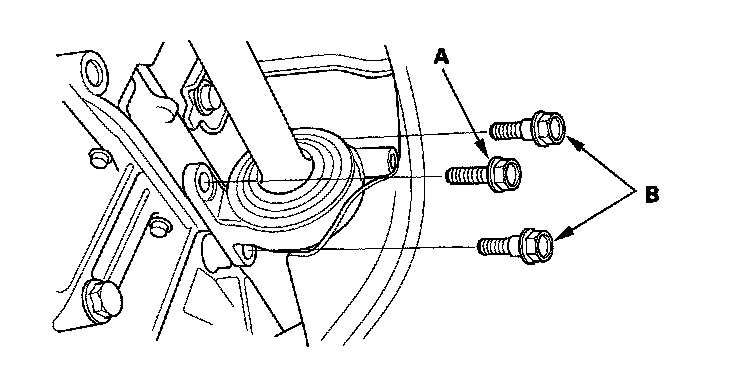
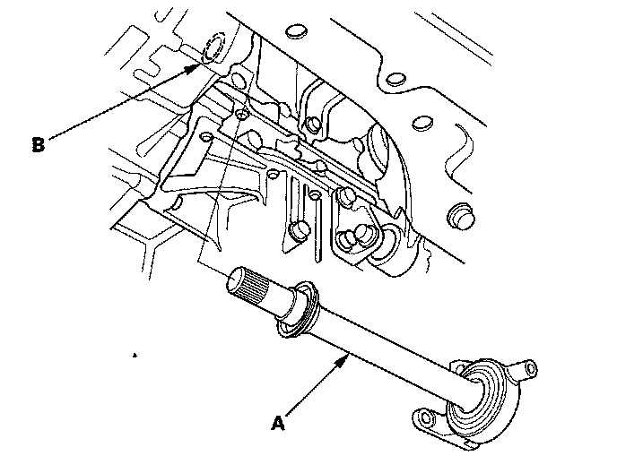

Intermediate Shaft Removal
Intermediate Shaft Removal5-speed M/T model (Except Si)
1. Drain the transmission fluid. Reinstall the drain plug with a new washer.
2. Remove the right driveshaft.
3. Remove the lower torque rod bracket (A).

4. Remove the flange bolts.

5. Remove the intermediate shaft (A) from the differential. Hold the intermediate shaft horizontal until it is clear of the differential to prevent damaging the differential oil seal (B).

6-speed M/T model (Si)
1. Drain the transmission fluid. Reinstall the drain plug with a new washer.
2. Remove the right driveshaft.
3. Remove the heat shield (A).

4. Remove the flange bolt (A) and the two shoulder bolts (B).

5. Remove the intermediate shaft (A) from the differential. Hold the intermediate shaft horizontal until it is clear of the differential to prevent damaging the differential oil seal (B).
